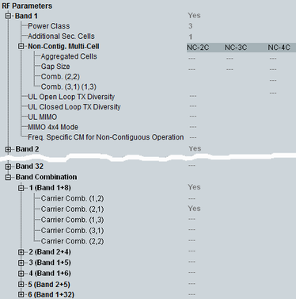

RF UE Capabilities
The UE capability information in the RF parameters section indicates the supported operating bands.

RF parameters UE capabilities
- "Band":
Support of the individual WCDMA operating bands - "Power Class":
Indicates the UE power class for each supported band as defined in 3GPP TS 25.101 - "Additional Sec. Cells":
Indicates the number of additional secondary serving cells supported by the UE. The absence of this IE means that the UE does not support multi-cell operation on three or four cells. - "Non-Contig. Multi-Cell":Each row of the table corresponds to a specific measured IE:
– "Aggregated cells": the maximum number of cells supported in non-contiguous multi-cell operation (NC-2C, NC-3C, NC-4C: 2 to 4 cells) – "GAP size": the maximum supported gap size between the aggregated cells – "Comb. (2,2)": support of an equal number of contiguous cells on each side of the gap – "Comb. (3,1) (1,3)": support of a different number of contiguous cells on each side of the gap
Each column corresponds to a specific non-contiguous multi-cell constellation: non-contiguous multi-cell with 2 to 4 cells - "UL Open Loop TX Diversity":
Support of uplink open loop transmit diversity in CELL_DCH - "UL Closed Loop TX Diversity":
Support of uplink closed loop transmit diversity in CELL_DCH - "UL MIMO":
Support of uplink MIMO in CELL_DCH - "MIMO 4x4 Mode":
Support of MIMO mode with four transmit antennas in CELL_DCH - "Frequency-Specific CM for Non-Contiguous Operation":
Indicates for the intra-band non-contiguous operation, whether the UE applies compressed mode only to the following frequencies:– Associated with the secondary serving HS-DSCH cells – Belonging to the block of configured carriers other than the serving HS-DSCH cell - "Band Combination":
Support of dual band multi-cell operation. For the pre-defined band combination, see also "DB DC HSDPA". If carrier combination (X,Y) is supported, then carrier combination (M,N) is supported, where 1 ≦ M ≦ X and 1 ≦ N ≦ Y. Absence of the carrier combination indication means that the UE only supports the carrier combination (1,1).
Example – if the UE supports band combination 1 (band 1+8) and the carrier combination (1,2), then the possible configurations are:
One contiguous carrier in band 1 and a block of two contiguous carriers in band 8
One contiguous carrier in band 8 and a block of two contiguous carriers in band 1
One contiguous carrier in band 1 and one contiguous carrier in band 8